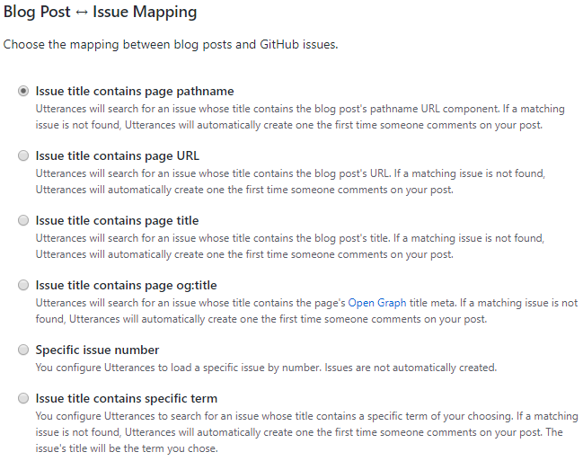
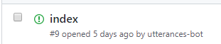
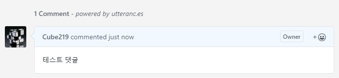
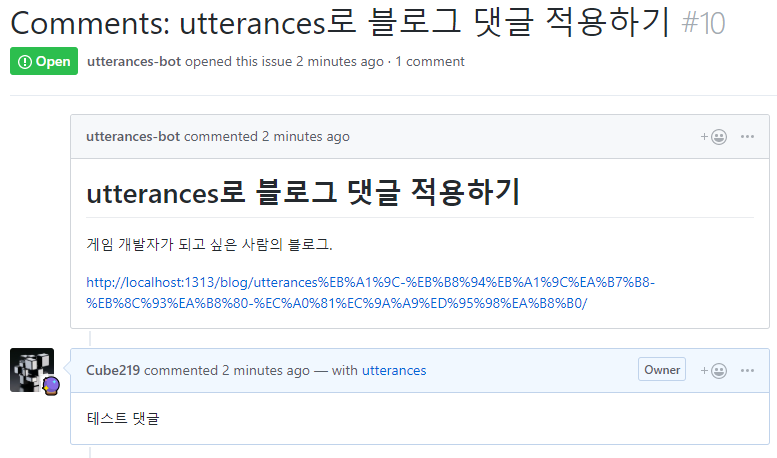

이 블로그는 Hugo라는 정적 웹 페이지 생성기로 만들었는데, 정적 웹 페이지인 경우 서버에 있는 데이터를 실시간으로 수정하지 않기 때문에 댓글 기능을 구현하기가 힘들다. 그래서 이러한 댓글 기능을 추가하는 여러 서비스들이 있다. 이 테마에서는 disqus하고 staticman을 지원해서 한 번 적용시켜봤는데, 둘 다 만족스럽지가 않았다.
Disqus의 경우
- 장점
- 구현하기가 쉽다. (Hugo의 경우 기본적으로 지원)
- 단점
- disqus 계정에 가입을 해야 댓글을 달 수 있다.
Staticman의 경우
- 장점
- 댓글의 내용이 자동으로 서버에 저장된다.
- 따로 계정을 만들 필요가 없다.
- 단점
- 서버에 저장하고 배포하는 과정이 필요해서 댓글을 다는데 시간이 걸린다.
- GitHub Page만 지원한다.
이러한 단점들이 있어서 다른 것이 있나 찾아보다가, utterances를 발견하게 된다.
Utterances
이 서비스는 GitHub의 issue를 이용해 댓글을 달고 표시를 한다. Issue를 각 게시글과 연결하고, 댓글을 달면 그 Issue에 글을 쓰는 방식으로 동작한다. 단점이라면 GitHub계정이 있어야 한다는 점이지만, 이 블로그는 개발자 블로그라서 괜찮을 것 같았다.(다들 GitHub 계정이 있지 않을까?)
Utterances 적용
먼저 Issue들을 생성할 GitHub 저장소를 준비한다. 이때 저장소는 public으로 만들어야 한다. 새로 댓글 전용 저장소를 만들어도 되지만, 필자는 기존의 GitHub Blog를 이용했다.
그리고 utterances 홈페이지로 가서 설정을 하면 된다.

Repository에서는 아까 준비한 저장소 이름을 넣으면 된다.

블로그 글과 Issue를 어떻게 mapping할 것인지 정하는 설정이다. 보통은 pathname이나 title을 써도 잘 작동을 하나, 필자의 블로그는 그럴수가 없었다.
필자의 블로그의 처음 화면은 가장 최근에 쓴 글을 띄우게 되어있다. 그래서 mapping을 pathname이나 title로 하게 될 경우, 처음 화면에서 댓글을 달면 기존의 issue가 아닌 새로운 issue에 써지게 된다.

처음 화면의 pathname은 /이기 때문에 해당 글의 제목이 아닌 index로 issue가 생성되어 버리고, 연결도 엉뚱하게 된다.
이러한 경우 때문에 수동으로 mapping을 해야 했다. 다행히 Hugo에서 .Title을 하면 해당 글의 제목을 알 수가 있어서 이것을 이용해 구현했다.
|
|
이외에 다른 설정들을 하고 나면 위와 같은 html코드가 보일 것이다. 이것을 복사해서 사이트에 붙여넣으면 된다. 필자의 경우에는 기존 테마에 있던 comments.html 파일에 넣었다.
Issue mapping에서 Specific issue number나 Issue title contains specific term을 선택할 경우 issue-term이 **[ENTER TERM HERE]**나 **[ENTER ISSUE NUMBER HERE]**라고 나올텐데, 이는 수동으로 mapping을 해야 하는 경우이므로 사용자가 저 위치에다가 페이지마다 알맞은 값을 넣어야 한다.


적용 후 이 글에 댓글을 달아보았다. 댓글을 달면 자동으로 GitHub issue를 생성해서 댓글을 다는 것을 볼 수 있다.